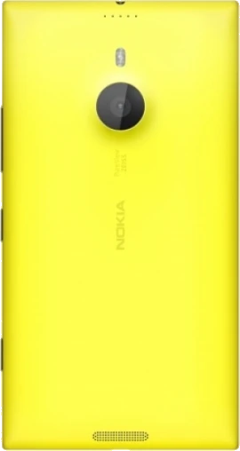

Lumia 1520

The phone launched with Windows Phone 8 and never had an Android vendor. It boots through UEFI, BootShim and lk1st into the LineageOS msm8974 3.4 kernel, adapted to the Windows Phone TrustZone. The modem firmware comes from the stock image, where it is encrypted: the phone’s own TrustZone decrypts it at boot.
Already working
- All four CPU cores, 1080p display with GPU acceleration
- Touch and capacitive keys
- Wi-Fi, Bluetooth, NFC
- SIM, LTE data, SMS and outgoing calls
- Loudspeaker and earpiece
- Hardware video decoding
- MicroSD, sensors, charging
Working on
- Microphone in calls: the other side can’t hear you yet
- Camera
- GPS fix
- Deep sleep and battery life
- Smoother app transitions
Credits
- KorelisLabs: lumia-1520-mainline (boot chain, device tree, TrustZone quirks, hardware addresses, APDS-9930).
- Markynose (Mark Buchok): lumia930-linux (SMP through the UEFI mailbox, touch, graphics).
- imbushuo: BootShim.
- msm8916-mainline: lk2nd (lk1st).
- René Lergner (HeathCliff): WPInternals; AkariRiku and joaozittoo: the RM-1085 donor files.
- WOA-Project and the Legacy Portable Computing Wiki: unlock guides.
- Android4Lumia950 (djokcho, EpicLPer, j0sh1x, sonic011gamer and the community): the Lumia Android installer used as the model for the boot chain and partition layout, and the 950 XL work reused here (modem bring-up, UIM bootstrap).
- msm8974-mainline and postmarketOS.
- LineageOS and TheMuppets: the msm8974 kernel, the OnePlus One (bacon) and msm8974-common trees and blobs, the legacy NXP NFC stack.
- NXP (Sylvain Fonteneau): the Android PN544 kernel driver.
- TeamWin: TWRP.
- The mainline Linux authors of the tsl2772, ak8974 (HSCDTD008A) and TAS2552 drivers, used as references; STMicroelectronics: the lis3dh_acc driver used as a model.